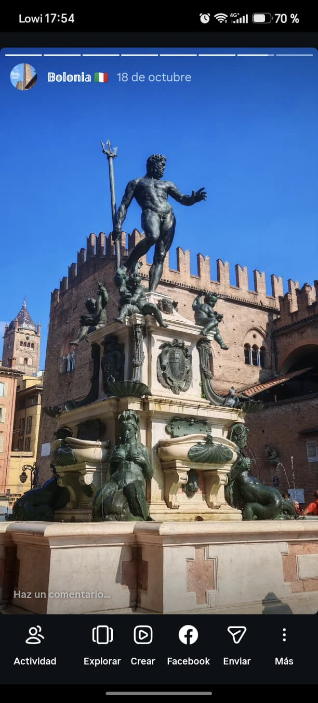
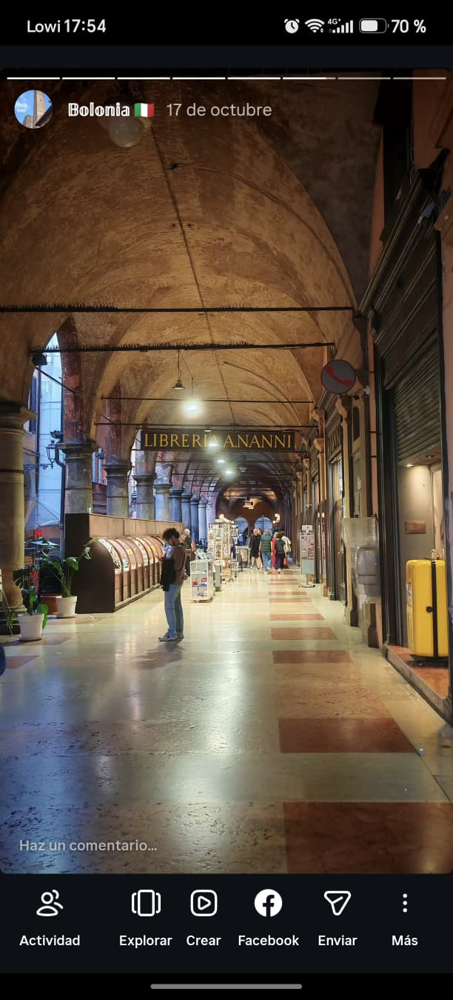
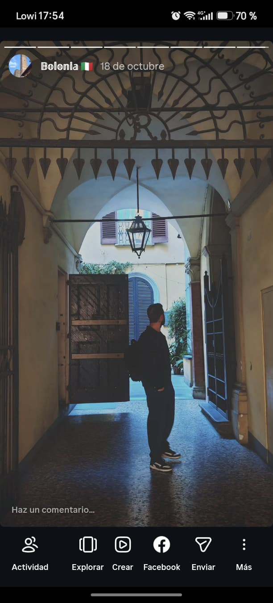
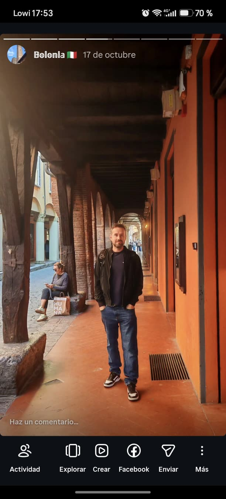
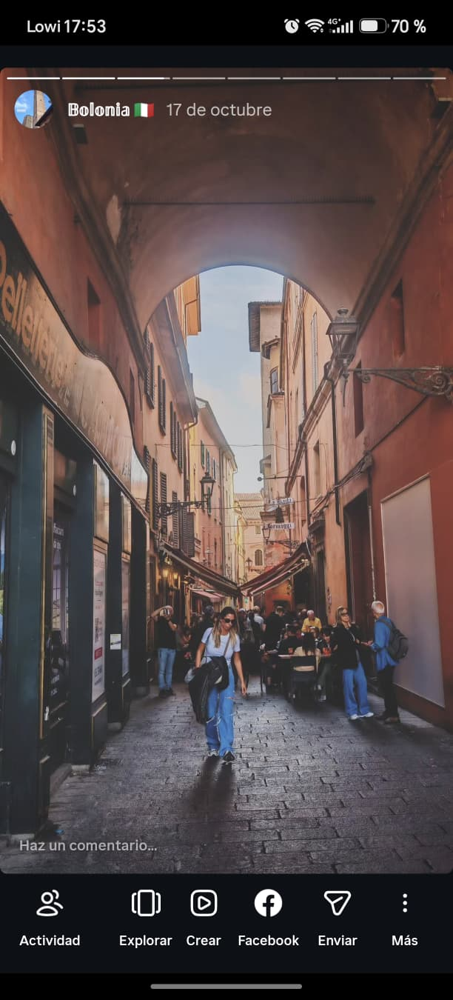
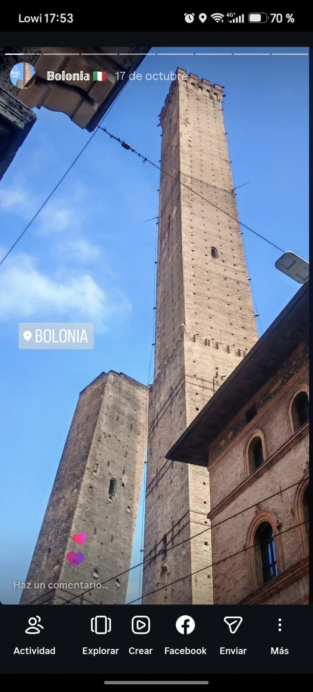
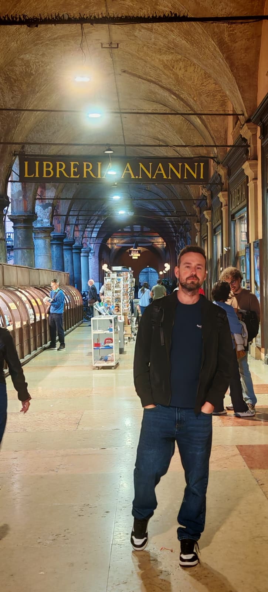
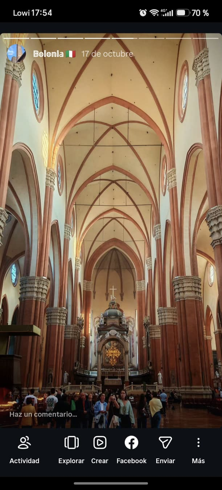
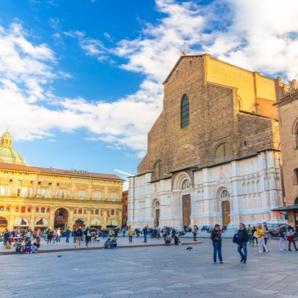

1. 🏙️ Introducción a Bolonia: la ciudad de los pórticos y el ragú
Bolonia (Bologna en italiano) es una de las ciudades más fascinantes y auténticas de Italia, y sin embargo, durante décadas ha permanecido en la sombra de Florencia y Venecia. Capital de la región de Emilia-Romaña, Bolonia es un crisol de historia, arte y, sobre todo, gastronomía. Su casco histórico es uno de los mejor conservados de Europa, con más de 38 kilómetros de pórticos que recorren sus calles, declarados Patrimonio de la Humanidad por la UNESCO. Estos soportales, que comenzaron a construirse en la Edad Media para ampliar las viviendas sobre la vía pública, hoy son el símbolo de una ciudad que invita a caminar sin prisa, protegida del sol y de la lluvia.
Bolonia es conocida como "la ciudad de las tres T": Torri, Portici y Tortellini. Las torres medievales, de las cuales quedan una veintena en pie (las más famosas son la Asinelli y la Garisenda), dominan el skyline y recuerdan la época en que las familias nobles competían por construir la más alta. Los pórticos, con sus arcos y bóvedas, crean un laberinto arquitectónico único en el mundo. Y los tortellini, junto con el tagliatelle al ragù (el auténtico origen de lo que fuera de Italia se llama "boloñesa"), son la cumbre de una tradición culinaria que ha dado a Bolonia el apodo de "la grassa" (la gorda), en el mejor sentido de la palabra.
La ciudad alberga la universidad más antigua del mundo occidental en funcionamiento continuo (fundada en 1088), lo que le da un ambiente joven y vibrante, con miles de estudiantes que llenan sus plazas, bares y librerías. A diferencia de otras ciudades italianas, Bolonia conserva un carácter auténtico y menos masificado, donde los boloñeses viven su ciudad con orgullo y donde una comida completa aún puede costar menos de 15 euros. Su Piazza Maggiore, presidida por la inacabada Basílica de San Petronio y la Fuente de Neptuno, es uno de los espacios urbanos más bellos de Italia y el corazón palpitante de la vida local.
---
3. 🏨 Dónde alojarse en Bolonia: mejores zonas y hoteles
🏛️ Centro Histórico (Piazza Maggiore) ⭐⭐⭐⭐⭐
🎓 Zona Universitaria ⭐⭐⭐⭐
🚉 Zona de la Estación Central ⭐⭐⭐
🌿 Santo Stefano / Saragozza ⭐⭐⭐⭐
🚫 Zonas a evitar: Bolonia es una ciudad muy segura, pero como en toda gran ciudad, conviene tener precaución en los alrededores de la Estación Central de noche y en algunas calles del barrio Bolognina, al norte. El centro histórico y las zonas turísticas son extremadamente seguras, incluso a altas horas de la madrugada.
4. 🏛️ Qué ver en Bolonia y alrededores (Guía completa con 11 imprescindibles)

1. Piazza Maggiore y Basílica de San Petronio
La Piazza Maggiore es el corazón de Bolonia y una de las plazas más bellas de Italia. Está presidida por la Basílica de San Petronio, una iglesia gótica cuya fachada quedó inacabada (la parte superior sigue siendo de ladrillo desnudo), lo que le da un aspecto único y fascinante. En su interior, en el suelo, se encuentra la famosa línea meridiana, un reloj solar gigante construido en el siglo XVII que permitía calcular con precisión el calendario [citation:2]. En la plaza también destacan la Fuente de Neptuno, el Palacio Comunal y el Palacio del Podestà. Es el lugar perfecto para empezar la visita y para volver al atardecer, cuando la luz dora los edificios y la vida fluye entre los pórticos.

2. Las Dos Torres (Le Due Torri): Asinelli y Garisenda
Las Dos Torres son el símbolo medieval de Bolonia. En su época de esplendor, la ciudad llegó a tener más de 100 torres, construidas por familias nobles para demostrar su poder y para defenderse. Hoy quedan una veintena, pero las más famosas son la Torre degli Asinelli (la más alta, con 97 metros) y la Torre della Garisenda (más baja y famosa por su inclinación, que inspiró a Dante en la Divina Comedia). Subir a la Torre degli Asinelli (498 escalones) recompensa con unas vistas espectaculares de la ciudad y de los tejados rojos [citation:1]. La Garisenda está actualmente en obras de consolidación y no se puede subir.

3. Los Pórticos (I Portici) – Patrimonio de la Humanidad
Los pórticos son la seña de identidad de Bolonia. Con más de 38 kilómetros de longitud, forman un laberinto arquitectónico único en el mundo que ha sido declarado Patrimonio de la Humanidad por la UNESCO. Comenzaron a construirse en la Edad Media como una forma de ampliar las viviendas hacia la calle, y con los siglos se convirtieron en un elemento esencial de la vida urbana: protegen del sol, de la lluvia y de la nieve, y bajo ellos se instalan comercios, cafés y talleres. Recorrerlos es la mejor manera de descubrir la ciudad, desde el centro hasta las zonas más residenciales.

4. Santuario de San Luca y el pórtico de 666 arcos
El Santuario de San Luca es el símbolo religioso de Bolonia y uno de los lugares más queridos por los boloñeses. Se encuentra en lo alto de una colina al suroeste de la ciudad, y se llega a él a través de un pórtico monumental de 3,8 kilómetros y 666 arcos que asciende desde la Porta Saragozza. La caminata es exigente pero muy gratificante, y las vistas desde la cima (especialmente al atardecer) son sencillamente espectaculares. El santuario alberga una imagen de la Virgen con el Niño que, según la tradición, fue pintada por San Lucas.

5. Basílica de Santo Stefano (las Siete Iglesias)
La Basílica de Santo Stefano es un complejo religioso único en el mundo, formado por siete iglesias de diferentes épocas y estilos que se han ido fusionando a lo largo de los siglos. Se la conoce como "las Siete Iglesias" y es uno de los lugares más fascinantes y tranquilos de Bolonia. El conjunto incluye el Santo Sepulcro (una réplica del de Jerusalén), el claustro de los monjes y la iglesia de San Vitale. Es un lugar lleno de historia y espiritualidad, ideal para perderse y reflexionar [citation:2].

6. El Quadrilatero – El barrio gastronómico
El Quadrilatero es el barrio gastronómico de Bolonia por excelencia. Un laberinto de callejuelas estrechas entre Piazza Maggiore y las Dos Torres donde se concentran los mejores puestos de comida, trattorias, vinaterías y tiendas de productos típicos. La Via Pescherie Vecchie es el epicentro: aquí encontrarás puestos de mortadela, quesos, pasta fresca, balsámicos y vinos. Es el lugar perfecto para un aperitivo (que en Bolonia es casi una institución) o para comprar productos locales y llevarte un pedazo de Emilia-Romaña a casa [citation:1][citation:5].

7. Archiginnasio – El antiguo edificio universitario
El Archiginnasio fue la sede histórica de la Universidad de Bolonia, fundada en 1088 y considerada la más antigua del mundo occidental. El edificio, construido en el siglo XVI, alberga hoy la Biblioteca Comunal y el Teatro Anatómico, una sala de madera de abeto y yeso donde se realizaban las disecciones anatómicas para los estudiantes de medicina. El teatro está decorado con estatuas de médicos famosos y es una de las joyas del Renacimiento boloñés. También se pueden visitar las aulas históricas y el patio porticado.

8. Mercato di Mezzo – El mercado gastronómico
El Mercato di Mezzo es un mercado cubierto de estilo industrial situado en pleno centro histórico, a pocos pasos de Piazza Maggiore. En su interior se concentran puestos de comida, barras y pequeñas trattorias donde probar lo mejor de la gastronomía boloñesa en un ambiente informal y animado. Es ideal para comer algo rápido y bien (tagliatelle al ragù, piadinas, mortadela, quesos) o para tomar una copa de vino mientras se observa el ir y venir de la gente. Por la noche se convierte en un punto de encuentro para el aperitivo [citation:2].

9. Pinacoteca Nacional de Bolonia
La Pinacoteca Nazionale di Bologna es uno de los museos más importantes de Italia y una visita imprescindible para los amantes del arte. Alberga una colección excepcional de pintura emiliana y boloñesa desde el siglo XIII hasta el XVIII, con obras maestras de Giotto, Raffaello, Tiziano, Guido Reni, Carracci y muchos otros. El museo está distribuido en varias plantas y recorre la evolución del arte en la región, desde el gótico hasta el barroco. Es una visita tranquila y enriquecedora, alejada del bullicio turístico [citation:2].

10. MAMbo – Museo de Arte Moderno de Bolonia
El MAMbo (Museo d'Arte Moderna di Bologna) es el principal museo de arte contemporáneo de la ciudad y una visita obligada para quienes quieren ver el lado más creativo y actual de Bolonia. Está ubicado en una antigua panadería industrial reformada, un espacio amplio y luminoso que acoge exposiciones temporales de artistas nacionales e internacionales, así como una colección permanente centrada en el arte italiano desde la posguerra hasta hoy. También alberga las salas dedicadas a Giorgio Morandi, uno de los pintores boloñeses más universales [citation:2].
🍝 Osteria dell'Orsa 🇮🇹 Clásico universitario
🥟 Da Cesari 🇮🇹 Trattoria histórica
🏪 Mercato di Mezzo 🇮🇹 Food hall gastronómico
✨ Osteria Angolo degli Orefici 🇮🇹 Moderna y tradicional
7. 🍽️ Qué comer en Bolonia: platos típicos que no te puedes perder
🍝 Tagliatelle al ragù 🇮🇹 El plato rey
🥟 Tortellini in brodo 🇮🇹 El clásico navideño
🥪 Mortadela de Bolonia 🇮🇹 La auténtica bologna
🌯 Piadina 🇮🇹 Comida callejera
Mapa de la ruta recomendada por Bolonia
*Mapa ilustrativo con los puntos principales de interés en Bolonia y alrededores (Módena).